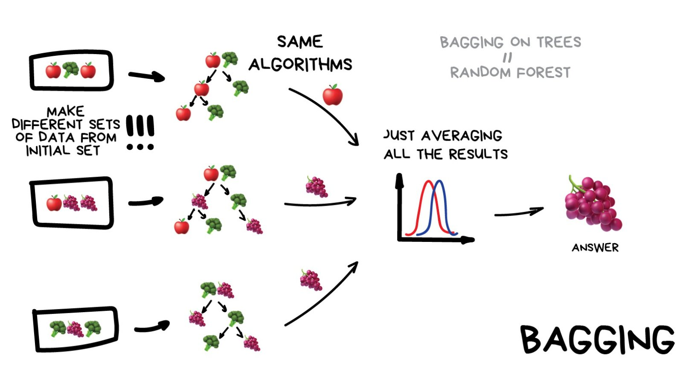
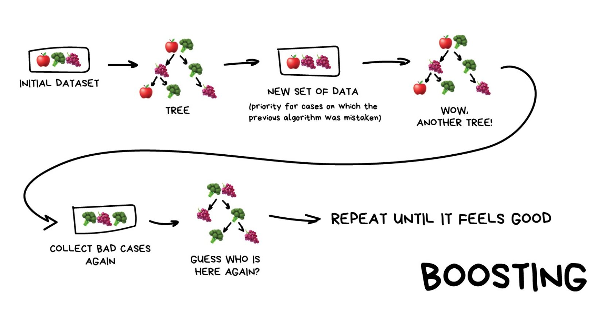
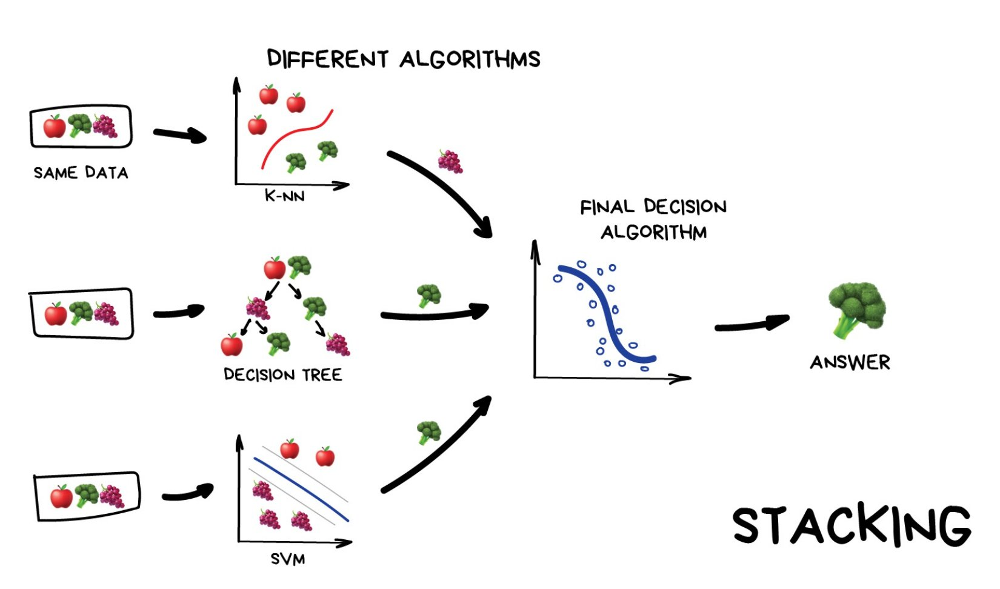

A minimodule on bagging, stacking, and boosting: how a crowd of unreliable models becomes one you can trust.
Take the decision tree from the last class and grow it on the Titanic passengers with no depth limit. It splits until almost every passenger sits in their own leaf.
# a Titanic tree with no depth limit from sklearn.tree import DecisionTreeClassifier tree = DecisionTreeClassifier(random_state=0).fit(X_train, y_train) tree.score(X_train, y_train) # 0.989 tree.score(X_test, y_test) # 0.734 the gap is the lie tree.get_depth() # 17
714 passengers, an 80/20 split. Almost perfect on the ones it trained on, barely past a guess on the rest.
One unstable model is a bad bet. A crowd of them, each wrong somewhere different, can be a good one. You let them disagree, then combine. The instability is the raw material: stable models like k-nearest-neighbours barely move when the data shifts, so copies of them agree on everything and the crowd adds nothing.
Why do ensembles prefer unstable base models like deep trees?
Resample the data with replacement, train a tree on each copy, then average the votes. Every tree saw a different slice and made different mistakes, so the disagreements cancel. Variance drops, bias stays put, and the trees train in parallel. Bagging on trees, plus one trick from the next module, is the random forest.

Different subsets of the data, the same algorithm on each, the answers averaged. Illustration after vas3k, Machine Learning for Everyone.
# the same depth-hungry trees, but 300 of them on bootstrap samples from sklearn.ensemble import RandomForestClassifier forest = RandomForestClassifier(n_estimators=300, random_state=0).fit(X_train, y_train) forest.score(X_train, y_train) # 0.989 forest.score(X_test, y_test) # 0.776 steadier on new passengers
Bagging mainly reduces which of these?
Train the trees in sequence, not side by side. Each new shallow tree pays attention to what the ones before it got wrong. The errors no single weak tree could reach get chipped away, so bias falls. Run it too long and it starts memorising. No parallel here, and the names you will meet are XGBoost and LightGBM.

Each new tree gets the cases the previous one fumbled, and the chain repeats. Illustration after vas3k, Machine Learning for Everyone.
# shallow trees, each fixing the leftovers of the last from sklearn.ensemble import GradientBoostingClassifier boost = GradientBoostingClassifier(random_state=0).fit(X_train, y_train) boost.score(X_train, y_train) # 0.926 boost.score(X_test, y_test) # 0.790 smaller gap, less memorizing
What is the core difference between bagging and boosting?
Train several different models in parallel, a nearest-neighbours, a tree, a support vector machine, then let one more model learn how to weigh their answers. The base models have to disagree to be worth blending. It shows up less than the other two, because they usually win for less effort.

Different algorithms on the same data, a final model deciding from their answers. Illustration after vas3k, Machine Learning for Everyone.
# three different models, a fourth learns to weigh them from sklearn.ensemble import StackingClassifier from sklearn.linear_model import LogisticRegression from sklearn.neighbors import KNeighborsClassifier from sklearn.tree import DecisionTreeClassifier from sklearn.svm import SVC stack = StackingClassifier( estimators=[("knn", KNeighborsClassifier()), ("tree", DecisionTreeClassifier(max_depth=4)), ("svm", SVC())], final_estimator=LogisticRegression(max_iter=1000), ).fit(X_train, y_train) stack.score(X_train, y_train) # 0.872 stack.score(X_test, y_test) # 0.797 different models, best test yet
Four models, one Titanic. Test accuracy walked 0.73, 0.78, 0.79, 0.80, and the gap between training and test closed at every step.
A bootstrap sample draws \(n\) rows from a dataset of \(n\) rows, with replacement. The chance that one particular row is missed on a single draw is \(1 - \tfrac{1}{n}\). Across all \(n\) draws, the chance it is missed every time is:
So about 36.8% of the rows never make it into a given sample, and about 63.2% do. The rows left out are called the out-of-bag set. Each model can be tested on exactly the rows it never trained on, which hands you a validation estimate for free, without setting any data aside.
Here is something wavy and noisy, the kind of shape a straight line gives up on. Pick a strategy, set how many trees and how deep, and watch what the crowd draws. The faint curves are the individual models. The bold one is what they agree on.
You have a deep tree that scores perfectly on the training data and falls apart on new customers. Which of the three methods would you reach for first, and which kind of error does it fix?
A fraud system has to score each transaction in a few milliseconds, spread across many machines at once. Bagging or boosting? Say why in one sentence.
Overfitting has shown up in regression, in single trees, and now here. Which of these three methods has its own way of overfitting if you let it run too long?